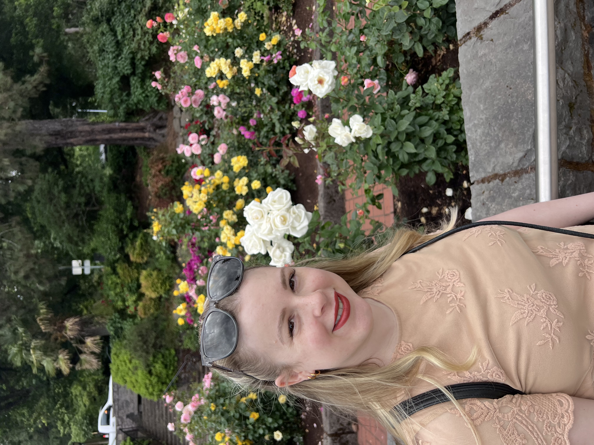

I am an experienced QA Engineer who has spent over six years in the tech industry, with a strong foundation of more than 4 years in QA and over 2 years in CX. I've held the position of Senior QA Engineer and also previously served as a Mobile Automation Lead at Mercari US. Over the course of my career, I have steadily advanced from a tier 1 agent to ultimately becoming a CX Team Lead before landing in QA. My strong background in customer service + support makes me a great eye for testing with a customer lens.
I am an experienced professional who has spent over six years in the tech industry, with a strong foundation of more than 4 years in QA and over 2 years in CX. Currently, I hold the position of Senior QA Engineer and have previously served as a Mobile Automation Lead at Mercari US. Over the course of my career, I have steadily advanced from a tier 1 agent to ultimately becoming a CX Team Lead.
I am currently pursuing a degree in Computer Science at Portland Community College and have aspirations of transferring to PSU to complete my studies by 2025-2026. I am proud to share that I have consistently received the President's Honors List award for the past three terms, with a cumulative GPA over 3.5.
My professional passion is centered around leveraging my QA expertise to ensure that technology is accessible for everyone. I am a constant and enthusiastic learner, always exploring new tools and techniques, and I am committed to collaborating with teams to excel in the ever-evolving tech industry. Beyond my professional endeavors, I play an active role in the tech community, with a particular emphasis on involvement with PDXWit (Portland Women in Tech).
I love many genres of music (electronic, classical, new beat, EBM, techno, house, and more!) and have played music live a few times myself. I have always been an avid music lover ever since I was a kid making mixtapes from listening to Casey Casum, Rick Dees,radio show.
I've always enjoyed absurd humor, especially in old cartoons (re: Space Ghost). Star Trek takes up about 75% of my brainpower half of the time, but thankfully it has always inspired me to do the work that I do, and to do it for the greater good."For all we know, at this very moment, somewhere, far beyond all those distant stars, Benny Russell is dreaming of us." — Benjamin Sisko